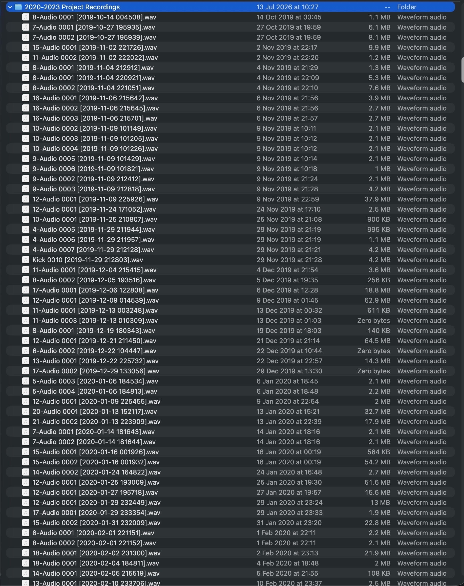
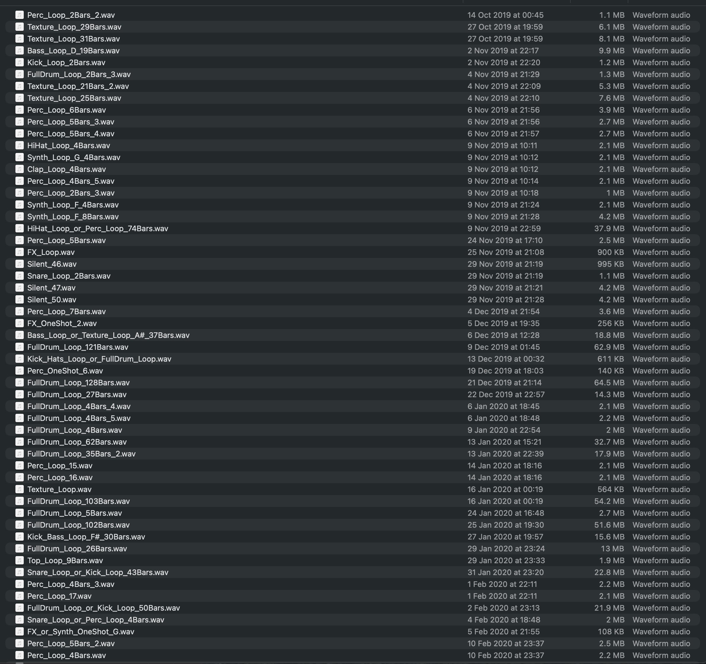

Skills
Evaluation & Experimentation
Machine Learning
Audio & Signal Processing
Engineering & Tooling
Testing & Analysis
My projects
Audio Sample Library Organiser
Music producers accumulate thousands of unnamed recordings from unfinished projects. They can't search that audio, so they never reuse it. I built a system that listens to each file, identifies what it is, and renames it descriptively, turning an unsearchable folder into a browsable library. It sorts a library into 24 categories and, where it isn't sure, says so and routes the file to a human instead of guessing.


The names containing "or", such as HiHat_Loop_or_Perc_Loop_74Bars.wav, are deliberate. Those are the files the system was not confident about, and it labels them with both candidates and sets them aside for review rather than picking one and being quietly wrong. Click either image to view it full size.
The hard part wasn't classifying audio. It was proving the system actually got better.
- Raised confident accuracy on a fresh 800-file library, audio the system had never seen, from 67% to 84% across 17 measured rounds. Around half the gain landed on files I never hand-corrected, which is the evidence it generalised rather than memorised.
- Rejected an upgrade that improved held-out accuracy by 6 points. Checking all 123 validation files one by one showed it had become confidently wrong on real-world audio. A test set drawn from the same source as the training data structurally cannot catch that.
- Audited my own headline metric and found it contaminated: hand-corrected files were being counted inside the generalisation number. Published the honest figure (71%, not 80%) and changed how I report results.
- Built a correction system where every human fix is logged with its failure mode and the model's full reasoning at the time, plus a regression suite that re-checks all 125 past corrections after every retrain.
Rather than one model making a single guess, ten independent classifiers each answer one narrow question (is there a kick? is it a loop? is it tonal?) and a deterministic rule layer assembles the verdict. Slower to build, but when it gets something wrong I can see exactly which judgement failed.
Poker Planning
A real-time multiplayer planning poker app built with JavaScript and Socket.io. An agile estimation tool where players join a session, vote anonymously on task complexity, and reveal results simultaneously, with live average calculation across all participants.
Algorithmic Word Solver
A C++ console tool that solves word puzzles using file I/O, candidate filtering and letter-frequency analysis to narrow a large dictionary down to viable answers. Validated through structured test cases covering edge conditions rather than happy-path input alone.